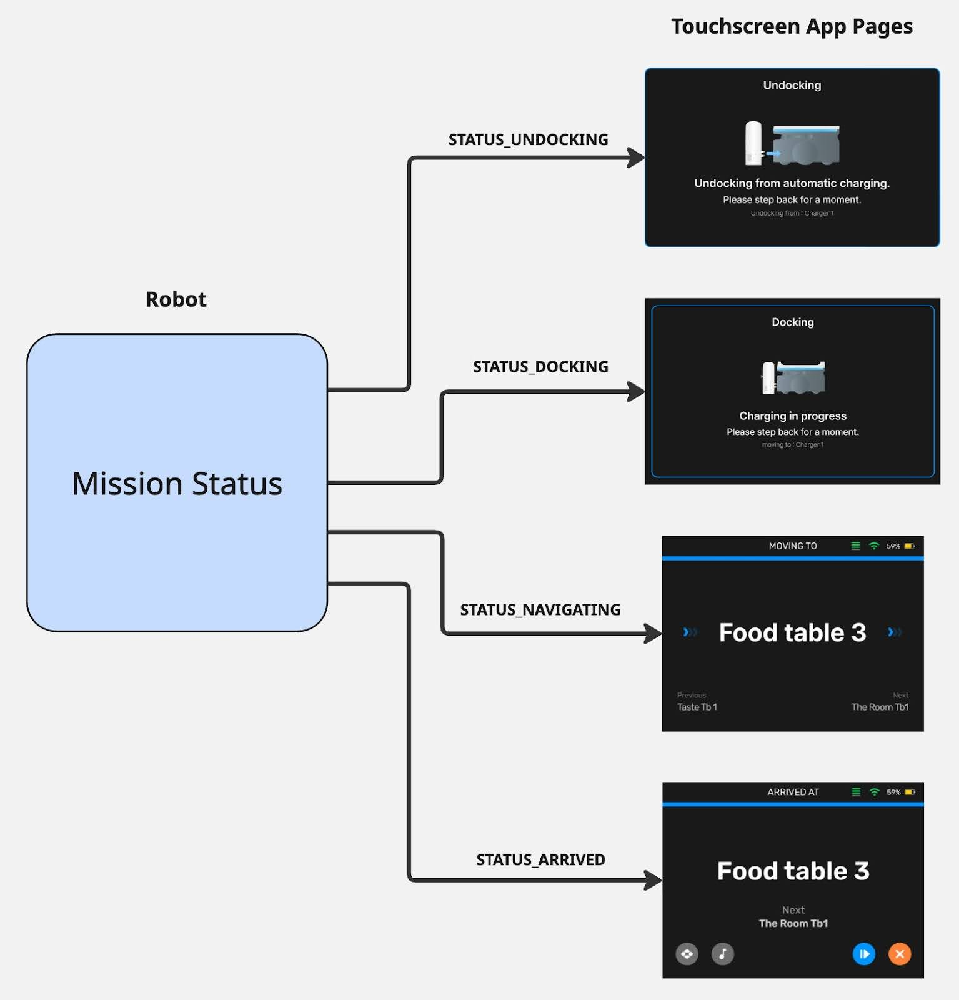

Missions¶
Missions are the main way we tell our robot to do work. They describe a set of actions and behaviors (move, wait for trigger, play sound, etc) that define how a robot accomplishes a workflow. Missions handle both simple workflows (navigate to goal) and complex workflows (navigate to multiple goals, waiting at each one for certain triggers), depending on the mission type.
Goals¶
Most missions utilize goals supplied by the user. A goal defines a place in the robot’s map that we want the robot to either go to, or do some action with. This goal at the least will define a coordinate place in the map, and may also include more information detailing some of the work the mission has to do there. Some mission types only support a single goal, while other more complex missions support multiple goals.
Mission Types¶
A mission type tells us what kind of mission behaviors will be executed on the robot. As mentioned, missions can have very little complexity or a lot depending on how much logic the user wants the robot to execute. This allows developers to choose whether they want to delegate the workflow of the robot to a more complex mission, or manage more of the logic in their app and use smaller missions with less logic. Bear provides several pre-defined mission types, available through the API. These range from some simple mission types shared across all robot families, to some more complex missions exposed only to their respective robot family.
For example, a user wanting a Servi-family robot to complete a restaurant delivery workflow could make use of a DeliveryMission. This has logic to take several goals (positions in the map), navigate to each one, and wait for food to be removed before moving onto the next goal. It also includes things like prompting the customer to remove food, and other quality-of-life behaviors for the restaurant delivery use-case. This is useful for things like touchscreen control apps, allowing your application to send simple mission requests to accomplish a restaurant workflow, without much logic in the application itself.
Alternatively, you may want more control over the robot’s behavior, and want to trigger things through your own app instead. Using a simpler mission like NavigateMission (which just navigates to a single goals before finishing), you can tell the robot to just move to a goal, and have your app decide when to send the next navigation to a goal. This is useful for when you have a fleet manager dispatching robots, and need full control of the exact actions and timings for the robots.
The types of missions available are filtered per-robot-family, meaning that each family has a select set of missions the user can send it. This is to ensure only missions relevant to that robot family are available (it does not make sense to send a BussingMission to a Carti600 robot).
Command¶
Mission Commands are high-level controls for an overall mission. When a mission is created, commands are available for users to control the execution of that mission. The high-level commands are:
Cancel¶
- Stops mission execution and returns robot to Idle
- Logs in our system as a Cancelled mission, which can be useful for tracking user-cancelled missions
Pause¶
- Pauses execution of the mission, without resetting it
Resume¶
- Resumes execution of the mission, picking up from the point it left off
Finish¶
- Stops mission execution and returns robot to Idle
- Logs in our system as a Successful mission, allowing user to specify that this was not ended due to errors or issues
Mission Queue¶
Our mission system supports a mission queue, which gives users the ability to
queue up multiple missions that execute one after another. Missions can be added
with the Append API, and each mission will start executing as soon as the
previous mission in the queue is in terminal state.
Further down our roadmap, we will expand this functionality to allow for more powerful tools around this queue, including removing missions, inserting, and getting the current list of missions in the queue.
Status¶
Mission Status is the overall execution state of the mission. It tells us whether the mission is running, and if not, what state it ended the mission in. This is useful for understanding whether a command you sent correctly stopped/paused/resumed the mission, and whether the mission completed in error or not. This state is universal to all missions, and does not describe details about what the mission internally is doing. The high-level states are:
Running¶
- Mission is currently executing normally, either from mission starting or user Resume command
Paused¶
- Mission was paused by user Pause command
Cancelled¶
- Mission was cancelled by user Cancel command
Succeded¶
- Mission completed normally, either by completing the behaviors in the mission or by user Finish command
Failed¶
- Mission failed to complete due to internal error/failure in the mission
Feedback¶
While status provides us with the overall execution state of the mission, it doesn’t give us details of what is happening during a mission. To achieve this, we have a Feedback field in our Mission Status which describes what the mission internally is doing. This feedback, similar to our mission types, is per-robot-family, meaning we have a single Feedback msg type for all missions in a given robot family. This ensures clients can have stable feedback despite many different mission types being available to send to the robot.
Missions will populate information in the feedback as they are available. For example, given the following definition for Servi robot-family feedback:
// Servi Robot-Family Feedback
message Feedback {
enum Status {
STATUS_UNKNOWN = 0;
STATUS_NAVIGATING = 1;
STATUS_ARRIVED = 2;
STATUS_DOCKING = 3;
STATUS_UNDOCKING = 4;
}
Status status = 1;
}
This covers all potential states our missions can report to the client. However,
not all missions are guaranteed to utilize all of these states. A
NavigateMission may not have STATUS_ARRIVED, as it only contains
STATUS_NAVIGATE before the mission ends.
With this in mind, clients should build their applications to handle cases where states may show up in different orders, and all states may not even show up. Clients should not build applications that depend heavily on the ordering that each of these states arrive at, as different missions may have different behaviors in different orders. Building an application that relies on this means the mission cannot change without potentially breaking the client app.
A better way is to build your app such that it has handling for every possible state for Servi Feedback. That way no matter what mission you send, and what order the states appear, your app can properly adapt. A good example of this is building a touchscreen application to show mission feedback. If the touchscreen app has a dedicated page for each state, it can simply show the correct screen corresponding to a given status reported by the mission. If the Docking status never shows up, the screen simply does not display. This is resilient to changes in mission behavior as the application does not care what order or which statuses within the feedback show up.
